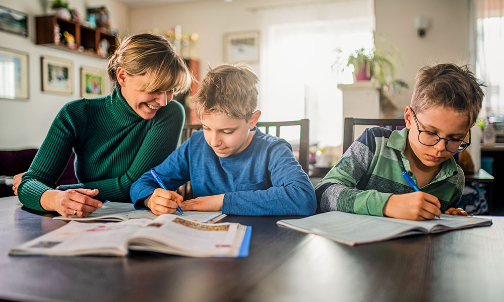

Homeschooling adalah alternatif pendidikan di mana orang tua atau wali murid memilih untuk mengajar anak-anak mereka di lingkungan rumah daripada mengirim mereka ke sekolah tradisional. Proses ini melibatkan pembelajaran melalui berbagai metode, seperti menggunakan kurikulum standar yang tersedia secara komersial, merancang kurikulum khusus yang disesuaikan dengan kebutuhan dan minat anak, atau bahkan menggabungkan pendekatan yang berbeda seperti pembelajaran online atau pengajaran langsung oleh orang tua. Hal ini memungkinkan fleksibilitas yang lebih besar dalam hal jadwal, metode pengajaran, dan fokus pembelajaran. Orang tua biasanya memilih homeschooling karena beragam alasan, termasuk kekhawatiran terkait lingkungan sekolah, keyakinan agama, atau kebutuhan khusus anak seperti disabilitas atau kecepatan belajar yang berbeda. Meskipun homeschooling menawarkan kontrol yang lebih besar atas pendidikan anak, ini juga memerlukan komitmen yang signifikan dari orang tua, baik dalam hal waktu, sumber daya, maupun pengetahuan tentang kurikulum dan metode pengajaran. Dukungan sosial dan jaringan homeschooling juga penting untuk memberikan kesempatan bagi anak-anak untuk berinteraksi secara sosial dan mengembangkan keterampilan sosial mereka.
evaluasi atau ujian yang dilakukan di luar jaringan atau koneksi internet.
Card linkevaluasi atau ujian yang dilakukan di dalam jaringan atau koneksi internet.
Card linklakukan pembayaran dengan mudah disini. bisa menggunakan bank apa saja.
M-banking Another link